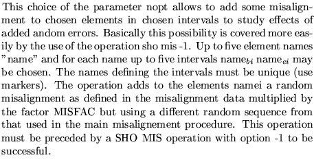

Input formatParameter definitions
SHO Misalignment
nopt [ for i from 1 to nopt]
....
99,
MISFAC
nopt
0 
 0
0
-1
-2 
-10
Examples
The different examples given all come from demo6.
SHOMIS 0, ****** following operations sets up array of misalignement to increase ****** the computation speed Sho mis -1, ****** the following shows a listing of the average lateral displacement ****** of a given misaligned element sho mis -10 hc, **** the following adds a random fractional misalignment to some **** element. For this operation to be operational a 'sho mis' with **** option -1 must have preceded. The additional misalignement is **** added to the previously defined misalignement. sho mis -2 hc mrks1 mrks2, 99 0.5,